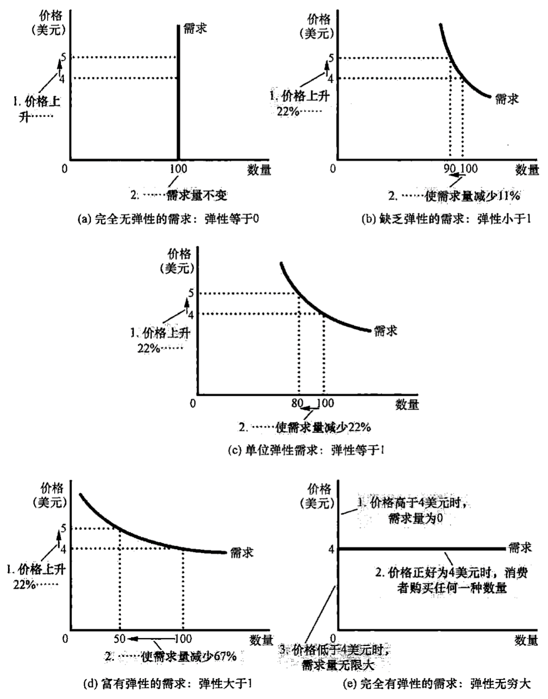
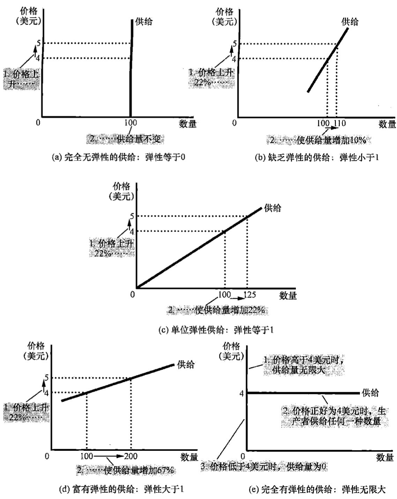

弹性
弹性是衡量买者与卖者对市场条件变化的反应程度，例如，当一个商品的价格上涨时，人们对这种商品的消费就会减少，但是这种消费会减少多少呢，就可以使用弹性来进行度量。
对需求与供给，分别有需求弹性与供给弹性。
需求弹性
需求价格弹性与其决定性因素
需求价格弹性衡量需求量对价格变动的反应程度，如果一个物品的需求量对价格变动的反应很大，则认为该物品的需求是富有弹性的，反之，如果一个物品的需求量对价格变动的反应很小，则认为该物品的需求缺乏弹性。
影响需求弹性的因素主要有：
- 相近替代品的可获得性：相近替代品可获得性强，消费者对该物品的价格就灰更加敏感，富有弹性。例如，黄油与人造黄油很容易互为替代，消费者可以很容易用其中一个替代另一个，富有弹性；但是鸡蛋就不同，鸡蛋没有相近替代品，需求弹性就要小很多。
- 必需品与奢侈品：必需品的需求往往缺乏弹性，奢侈品的需求往往富有弹性。
- 市场的定义：任何一个市场的需求弹性都取决于我们如何划定市场的边界，狭窄定义的市场的需求弹性往往大于宽泛定义的市场的需求弹性，因为狭窄市场的物品更容易找到替代品，例如：食物是一个宽泛的定义，往往缺乏弹性，冰激凌是一个狭窄定义的市场，往往富有弹性。
- 时间范围：物品的需求往往在长期内更有弹性，因为在长期内更容易找到相近替代品。
需求价格弹性的计算
需求价格弹性表示为需求量变动百分比除以价格变动量百分比。
$$需求价格弹性 = \frac{需求量变动百分比}{价格变动百分比}$$
例如，让一个商品的价格上升10%，需求量降低20%，由于需求与价格总是负相关的，所以需求弹性有时候会是负数，通常取绝对值表示，则需求价格弹性为
$$需求价格弹性 = |\frac{-20%}{10%}| = |-2| = 2$$
如上计算方式可以需求价格弹性，但是会存在一个问题，比如一个价格从 $p_{1}$ 变到 $p_{2}$ ，需求量从 $q_{1}$ 变到 $q_{2}$ ，会计算出一个价格弹性，但是价格从 $p_{2}$ 变到 $p_{1}$ ，需求量从 $q_{2}$ 变到 $q_{1}$ ，虽然变化相同，但是会计算出另一个不同的价格弹性，因为变动的百分比是基于不同的基础计算的。
为了避免这种问题，采用 中点法 计算，以初始水平与终点水平的平均值为基础计算变动百分比。
所以需求价格弹性计算就变成了
$$需求价格弹性 = \frac{(Q_{1} - Q_{2}) / [(Q_{1} + Q_{2}) / 2]}{(P_{1} - P_{2}) / [(P_{1} + P_{2}) / 2]}$$
不同需求弹性的曲线
几种曲线分类：
- 当弹性大于1，则需求是富有弹性的
- 当弹性小于1，则需求是缺乏弹性的
- 当弹性等于1，则需求是单位弹性的
下图表示了5种需求价格弹性。

需求价格弹性如何影响总收益
总收益是买者支付使得卖者获得点量，总收益等于 $P \times Q$ ，即成交价格左左下角的面积。
有如下规律：
- 当需求缺乏弹性（价格弹性小于1），价格与收益同方向变动，价格上升，总收益增加。或者换个角度理解，需求缺乏弹性，相近替代品的可获得性低，价格涨了照样需要消费，总收益自然增加。
- 当需求富有弹性（价格弹性大于1），价格与收益反方向变动，价格上升，总收益减少。
- 当需求单位弹性（价格弹性等于1），当价格变动时，总收益不变。
对于同一条需求曲线先，各点的需求价格弹性不一定是相同的，一般对于需求曲线而言，左上角价格弹性大于右下角的价格弹性。
其他需求弹性
除了需求价格弹性，还存在一些其他需求弹性。
衡量物品需求量对消费者收入变动反应程度可以使用需求收入弹性。
$$需求收入弹性 = \frac{需求量变动百分比}{收入变动百分比}$$
对于大多数物品而言，收入增加，需求量也会增加，需求量与收入同方向变动，这种正常物品的收入弹性为正数。
对于抵挡物品而言（如公共汽车），收入增加，需求量会减少，需求量与收入反方向变动，抵挡物品的收入弹性为负数。
衡量一种物品需求与另一种物品价格变动的反应程度可以使用需求的交叉价格弹性。
$$需求的交叉价格弹性 = \frac{物品1的需求量变动百分比}{物品2的价格变动百分比}$$
交叉价格弹性是正数还是负数取决于这两种物品是替代品还是互补品。
- 替代品：物品2价格增加，物品2需求量减少，物品1需求量会增加，交叉价格弹性为正数
- 互补品：物品2价格增加，物品2需求量减少，物品1需求量会减少，交叉价格弹性为负数
供给弹性
供给价格弹性与其决定性因素
供给价格弹性衡量供给量对价格变动的反应程度。如果供给量对价格变动的反应程度很大，则物品的供给对价格是富有弹性的，反之，则认为是缺乏弹性的。
供给价格弹性取决于卖者改变所生产的物品量的灵活性，改变越灵活，越富有弹性。通常情况下，供给在长期中的弹性强于短期。
供给价格弹性的计算
供给价格弹性用供给量变动百分比除以价格变动百分比。
$$供给价格弹性 = \frac{供给量变动百分比}{价格变动百分比}$$
如一个物品的价格上升10%，供给增加20%，则
$$供给价格弹性 = |\frac{20%}{10%}| = 2$$
同样由于变化方向的问题，相同的变化程度，直接用上式计算可能会导致价格弹性不同，也可用中点平均值作为基础进行计算。
不同弹性的供给曲线
下图表示了5中供给价格弹性的曲线。

在一般市场中，供给弹性并不是不变的，通常会向右上角弯曲，故同一条供给曲线中，左下角的供给价格弹性大于右上角的供给价格弹性。
供给、需求、弹性结合的实例
- 农业增产对农民并不一定是好事：当需求缺乏弹性，供给量增加，会引起价格大幅下降，导致总收益降低。
- 石油输出国不能一直保持石油的高价格：石油的需求和供给都缺乏弹性，短期内降低石油产量，可以提高石油价格，但是在长期中，供给与需求都会变得富有弹性，供给曲线同样的相左移动幅度，只会导致价格的小幅上升。
- 禁毒增加了与毒品相关的犯罪：对于吸毒者而言，毒品是缺乏弹性的，禁毒减少了毒品供给，价格会大幅上升，导致总收益增加，瘾君子为了更快得到钱，会造成更多的犯罪。与禁毒相比，禁毒教育可以减少与毒品相关的犯罪，因为禁毒教育减少了毒品的需求，降低了毒品价格，市场总收益也会减少。
reference
经济学原理：微观经济学分册，曼昆，第7版，–北京大学出版社
完 ～